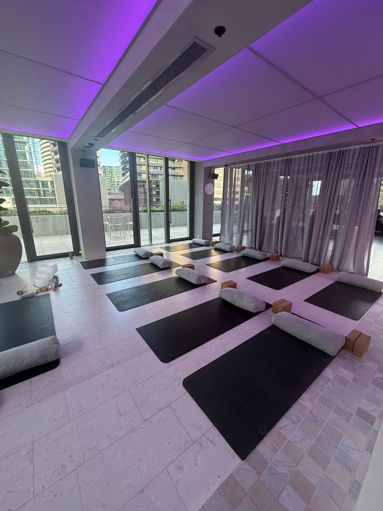

When I worked in corporate events and operations, I spent a lot of time in commercial buildings. Some had marble lobbies and views across the Yarra. Others were fairly ordinary. But the ones I remember fondly had nothing to do with the fit-out. They were the buildings where something was happening: where you'd see the same faces at the Friday session, and people from different floors knew each other's names.
That feeling has become much more important.

The office has to earn the commute
Hybrid work changed the deal. Most people now have a perfectly good desk at home, so the office has to offer something home can't: connection, energy, and the feeling of being part of something.
Tenants feel this pressure, and they pass it on to their buildings. A building that offers only floor space is competing on price. A building with a real community is competing on experience.
Why wellbeing works so well
Wellbeing sessions are one of the simplest ways to create that community, for three reasons.
- They give people a reason to come in on a particular day. A 7:30am breathwork session or a lunchtime yin class becomes an anchor in the week. "I'll come in Thursday, there's a sound bath at 12."
- They connect people across companies. In most buildings, tenants never meet. A shared class changes that quickly. When your team has friends on other floors, the building starts to feel like a neighbourhood.
- They use space you already have. You don't need a gym, showers or a fit-out. A quiet meeting room, a rooftop terrace or a vacant tenancy works beautifully. A candlelit sound bath in an empty suite also makes a strong impression on prospective tenants walking past.
A note on psychosocial safety
Employers now have legal duties to manage psychosocial hazards such as high job demands, poor support and burnout.
Source: Occupational Health and Safety (Psychological Health) Regulations 2025 (Vic)
It's important to be clear: a yoga class doesn't make any business compliant. The duty sits with each employer, and the real work is in job design, workload and culture. But wellbeing programs support that work. They give people practical tools for stress, build connection, and show staff that someone is paying attention. A building that makes this easy for its tenants is offering real value. I wrote more about the new rules in Psychological health is now the law in Victoria.
Calm, not just fitness
Most building wellness programs focus on fitness: HIIT, boxing, bootcamp. Those have their place. But many of the people in your building aren't looking to be pushed harder. They're looking to switch off.
That's where gentler practices come in:
- Breathwork they can use before a hard meeting
- Yin yoga for desk-tired bodies
- Meditation for people who think they can't meditate
- Sound baths that let a stressed team rest for 45 minutes
These sessions suit every age and fitness level, need no special gear, and are often the ones people talk about most.
The buildings people choose won't be the ones with the shiniest lobby. They'll be the ones where people feel good and feel connected.
How to start
You don't need to commit to a year-long program. I usually suggest:
- A one-week trial. A few sessions at different times (early morning, lunch, after work) to see what your tenants respond to.
- Listen and adjust. Track attendance and ask people what they want more of.
- Build a rhythm. Settle on a regular weekly or monthly program that people can plan around.
With more than 20 years in corporate events and operations, I take care of the logistics: running the sessions, setting up the space, and making sure everything is ready before anyone walks in.
If you manage a building or run tenant experience in Melbourne and you'd like to bring this to life, I'd love to chat.